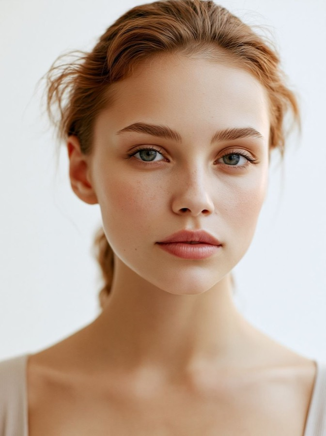
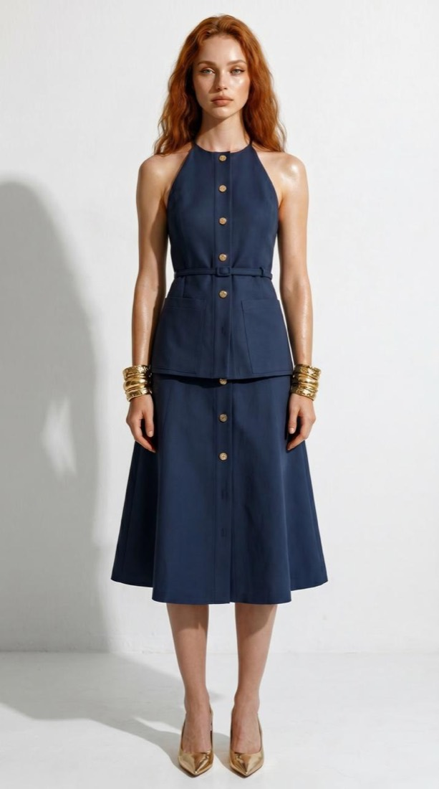
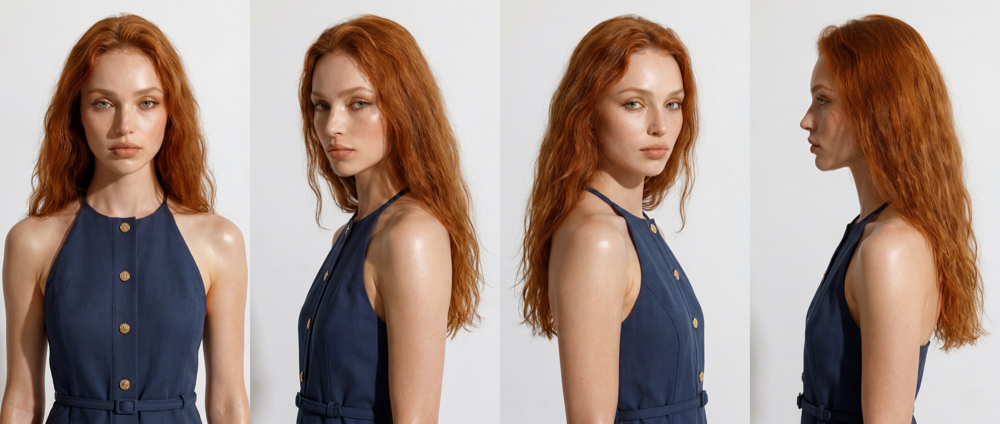
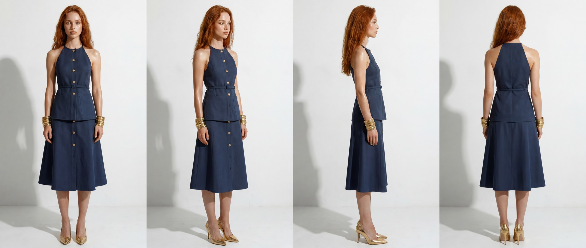

Своя модель — это постоянный человек в кадре, которого вы создаёте один раз и дальше используете во всех съёмках. Её не нужно искать, оплачивать почасово и ловить в графике: она всегда одна и та же, в одной и той же одежде, и поэтому карточки товара складываются в спокойную витрину, а не в набор случайных фотографий.
Цветочному магазину постоянно нужен человек в кадре: букет в руках выглядит живым, понятен масштаб, видно, как его нести и кому дарить. Живая съёмка это закрывает, но каждый раз заново: найти модель, договориться о времени, оплатить час работы, оплатить фотографа, свести график всех троих с графиком поставки цветов.
Вторая беда тише, но дороже: модели меняются. Сегодня одна девушка, через месяц другая, а карточки на сайте стоят рядом. Витрина перестаёт читаться как один бренд и превращается в сборную солянку.
Своя модель решает обе задачи сразу. Один раз созданный человек стоит в кадре столько, сколько вам нужно, и выглядит одинаково в январе и в августе.
Порядок здесь важнее инструмента. Если перепрыгнуть шаг, модель начнёт «плыть»: лицо поедет, возраст изменится, одежда станет другой — и серию придётся переснимать целиком.
Первый кадр — портрет крупно, на нейтральном фоне, при ровном свете. Никаких сложных поз и теней: сейчас нужно только лицо, всё остальное будет строиться от него.
Это будущее лицо бренда, и выбирать его стоит внимательно. Заменить героиню через полгода — значит переснять всё, что вы успели снять.
Правило: пока лицо не нравится полностью — дальше не идём.

Понравившийся кадр фиксируем — дальше он становится опорой для всех остальных. И апскейлим.
Апскейл — это шаг, на котором модели придают реалистичность: прорабатываются кожа, волосы, ресницы, мелкие детали. Без него лицо остаётся подозрительно гладким, и в карточке товара это видно сразу.
Правило: апскейлить до одежды, а не после — иначе детали придётся вытягивать в каждом кадре заново.
Подбираем одежду, в которой модель будет работать на ваших площадках: сайт, карточки товара, соцсети. Образ должен быть нейтральным настолько, чтобы не спорить с букетом, и характерным настолько, чтобы его узнавали.
Для сайта одежда должна быть одинаковой во всех кадрах. Когда в каждой карточке новый образ, страница рябит, и внимание уходит с товара на разглядывание нарядов.
Правило: один образ на всю серию. Разная одежда — разный бренд.

Паспорт модели — это набор кадров одного лица в разных ракурсах, который прикладывается к каждой новой генерации. Первая половина — лицо крупно: фас, три четверти, поворот, профиль.
Именно паспорт держит форму. С ним модель остаётся собой от кадра к кадру, без него — незаметно молодеет, меняет разрез глаз и через десять генераций превращается в другого человека.

Те же ракурсы в полный рост: фас, три четверти, профиль, спина. Это вторая половина паспорта — она фиксирует не только лицо, но и фигуру, рост, посадку одежды и обувь.
Две части вместе дают восемь опорных кадров. Дальше любая новая сцена строится от них.

Только теперь начинается работа, ради которой всё затевалось: к готовой модели добавляются букеты. Модель держит форму, образ не меняется, кадры складываются в серию.
И здесь главное правило портала остаётся в силе: букет должен быть вашим настоящим. Нейросеть меняет человека, свет и окружение — но не состав букета. Придуманный ею букет вы не соберёте, а покупатель придёт именно за ним.
Правило: человека можно создать, товар — нельзя.

Честный список того, на чём этот пайплайн ломается. Все три пункта — из практики, а не из теории.
Самая частая ошибка. Пока кадров два-три, кажется, что модель и так узнаваемая. На десятом кадре выясняется, что лицо изменилось, и серия распадается — вернуть прежнюю героиню без паспорта почти невозможно.
Каждый кадр по отдельности красивый, а витрина рябит. Глаз читает не букеты, а смену нарядов, и карточки перестают работать как единая линейка.
Соблазн большой: раз уж модель нарисована, пусть и букет нарисуется. В результате получается кадр, который невозможно повторить руками: несуществующие сорта, спираль, которая не собирается, цветы не в сезоне. Клиент приходит за картинкой, а вы объясняете, почему так не бывает.
Промты для каждого из шести шагов, готовая связка инструментов и порядок действий целиком — в картотеке.
Паспорт модели — это набор кадров одного лица в разных ракурсах, который вы прикладываете к каждой новой генерации. Он состоит из двух частей: лицо крупно и полный рост. Паспорт нужен, чтобы модель не менялась и не искажалась от кадра к кадру.
Апскейл — это шаг, на котором модели придают реалистичность: прорабатываются кожа, волосы и мелкие детали. Без апскейла лицо остаётся гладким и выглядит нарисованным, и в карточке товара это заметно.
Да, в этом и смысл. Один человек в одной одежде во всех карточках делает витрину спокойной. Если менять одежду от кадра к кадру, страница начинает рябить и внимание уходит с букета.
Нет. Модель — это человек в кадре, а букет остаётся вашим настоящим товаром: сорта, спираль и пропорции должны быть реальными. Нейросеть меняет окружение и человека, а не состав букета.